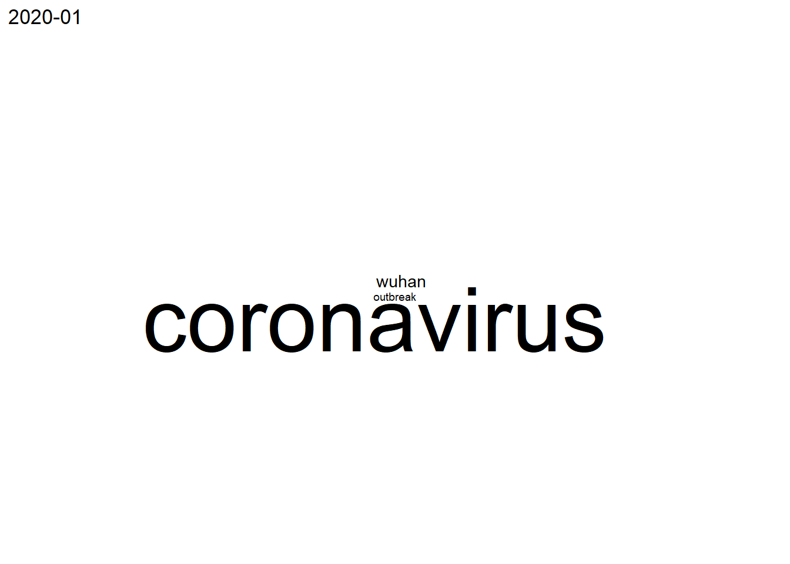
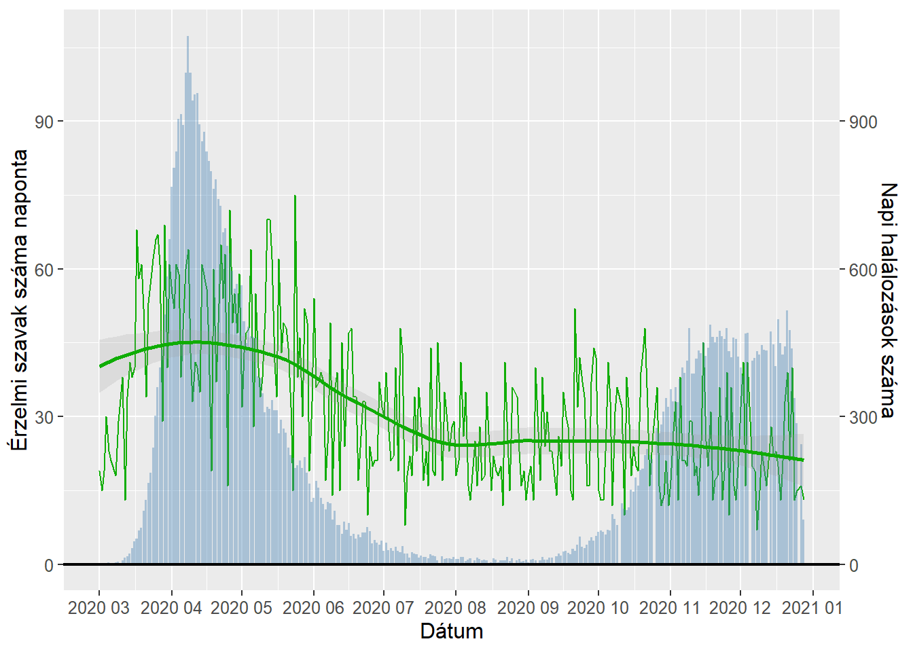
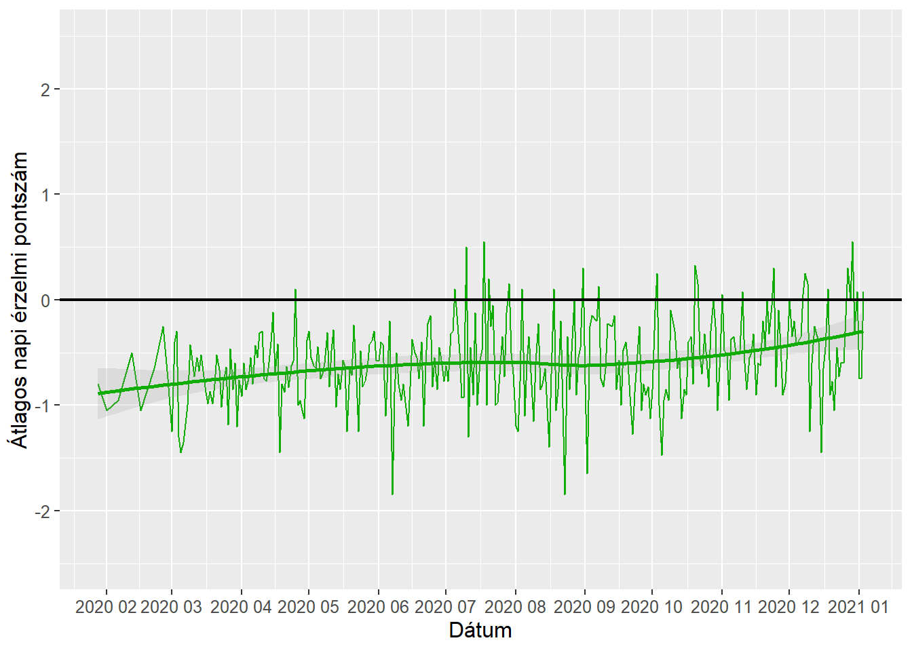

Szövegelemzés
Elemzés
A koronavírus eseményei és a vele kapcsolatos hírek megmutatják, hogy az emberek és a különböző médiumok hogyan viszonyulnak a pandémiához az idő elteltével. Ezen elemzéshez a Guardian napilap COVID-19-el kapcsolatos címeit gyűjtöttük össze. A körülbelül egy év szalagcímeit felölelő korpuszon bag of Words módszerrel a havonta és az egy év során leggyakoribb szavakat kerestük meg, sentiment analízissel pedig az AFINN szótár érzelmi skálája segítségével elemeztük a napi hírek korpuszait.
nr_of_pages=528
#528 lapig lehetett visszamenni a keresésben
for (i in 1:nr_of_pages) {
URL <- paste("https://www.theguardian.com/world/coronavirus-outbreak+uk/uk?page=", i, sep = "")
page <- read_html(URL)
title <- html_text(html_nodes(page, ".js-headline-text"))
#Van olyan hogy egy lapon két dátum is szerepel, heti bontás miatt ez nem probléma
time <- html_text(html_nodes(page, ".fc-date-headline"))[1]
if (i==1){
data_raw <- data.frame(time, title)
}
else{
data_raw <- rbind(data_raw, data.frame(time, title))
}
}A Guardian honlapján a COVID keresőszóra nagyjából január 29-től kezdődően nagyjából 1.05610^{4} cikk címet találtunk
data_cleansed <- data_raw %>% filter(!duplicated(title)) %>% {mutate(., id = seq(nrow(.)))} %>%
mutate(
date = as.Date(time, format = "%d %B %Y"),
month = format(date, "%Y-%m")
) %>% na.omit()Bag of Words
corpus_raw <- Corpus(VectorSource(as.character(data_cleansed$title)))
#Korpusz tisztítása
corpus_filtered <- corpus_raw %>% tm_map(content_transformer(tolower)) %>%
tm_map(stripWhitespace) %>% tm_map(removeNumbers) %>%
tm_map(removePunctuation, ucp=TRUE) %>%
tm_map(removeWords, c(stopwords("english"), "also", "one", "will"))A korpusz szokásos tisztítása közben voltak olyan stopwordok, amelyeket mi adtunk hozzá, majd a strukturált mátrix és a fogalmak eloszlását vizsgáltuk a teljes korpuszban
termdocument <- removeSparseTerms(TermDocumentMatrix(corpus_filtered), 0.999)
documentterm <- removeSparseTerms(DocumentTermMatrix(corpus_filtered), 0.999)
words_frequency_all <- data.frame(Words=row.names(as.matrix(termdocument)),
Freq=rowSums(as.matrix(termdocument), na.rm = TRUE))
freqterms <- findFreqTerms(documentterm, lowfreq = 100)
ggwordcloud(words_frequency_all$Words, words_frequency_all$Freq, max.words = 100)A havonta leggyakoribb szavakat vizsgáltuk egy ciklusban, amely a havi korpuszokat megtisztítja és elemzi
data_cleansed_monthly <- data_cleansed %>% group_by(month) %>%
summarise(monthly_text = paste(title, collapse = " "))
#Táblázat létrehozása
words_monthly <- data.frame(matrix(ncol=nrow(data_cleansed_monthly), nrow=15))
colnames(words_monthly) <- data_cleansed_monthly$month
for (i in 1:nrow(data_cleansed_monthly)){
#Corpus létrehozása
corpus_monthly_raw <-
Corpus(VectorSource(as.character(data_cleansed_monthly$monthly_text[i])))
#Korpusz tisztítása
corpus_monthly_filtered <- corpus_monthly_raw %>%
tm_map(content_transformer(tolower)) %>%
tm_map(removePunctuation, ucp=TRUE) %>%
tm_map(removeNumbers) %>%
tm_map(removeWords, c(stopwords("english"), "also", "one", "will"))
#%>% tm_map(stemDocument)
#Term-Document mátrix létrehozása a 10 leggyakoribb szó miatt
matrix_monthly <- removeSparseTerms(TermDocumentMatrix(corpus_monthly_filtered), 0.999)
words_frequency <-
data.frame(Words = matrix_monthly$dimnames$Terms, Freq = matrix_monthly$v)
words_monthly[,data_cleansed_monthly$month[i]]<-
head(words_frequency[order(-words_frequency$Freq),]$Words,15)
#Szófelhők készítése, a corpus nagyságától függően
plot(ggwordcloud(words_frequency$Words, words_frequency$Freq, max.words = 100)+
ggtitle(data_cleansed_monthly$month[i]))
#wordcloud(corpus_monthly_filtered, max.words=0.1*matrix_monthly$nrow)
}
A havonta 15 leggyakoribb szó a Guardian címeiben.
Színekkel a teljes korpusz leggyakoribb szavait jelöltük
A táblázatból az alábbi információk olvashatóak le:
-a január-februári időszakban az Egyesült Királysággal még kevésbé foglalkoztak a cikkek
-a következő időszakban Nagy-Britannia miniszterelnöke és az ott bevezetett tier alapú módszer külcsszavai is előkerültek
-a karácsonyi lezárások már novemberben is közbeszéd alapja voltak
-a kezdeti ‘coronavirus’ kifejezésről fokozatosan állt át a Guardian az egyszerűbb, COVID betűszóra
Sentiment elemzés
A sentiment elemzésben a napi címekből, az AFINN szótár érzelmi skálájának felhasználásával készült
A grafikonokon pedig az érzelmet tartalmazó szavak számát és a napi átlagokat ábrázoltuk
#AFINN lexikon betöltése
AFINN <- get_sentiments("afinn")
data_cleansed <- data_cleansed %>%
mutate(
title = as.character(title)
)
#Szavakra bontás, pontszámok összeaggregálása
words <- left_join(
tidytext::unnest_tokens(data_cleansed, words, title), AFINN, by=c("words"="word"))
nr_sentiment_words <-
words %>% group_by(date) %>% summarise(non_na_count = sum(!is.na(value)))
score_by_id <- words %>% group_by(id) %>% summarize(score=sum(value, na.rm=TRUE))
#Eredeti adatok mellé rakás
data_cleansed <- left_join(data_cleansed, score_by_id, by="id")
#Napi (és heti) aggregálás
score_by_day <-
data_cleansed %>% group_by(date) %>% summarize(score_sum=sum(score, na.rm=TRUE), score_avg=mean(score, na.rm=TRUE))Grafikonok
deaths_in_uk <- read_csv("data_2020-Dec-29.csv",
col_types = cols_only(date = col_guess(),
newDeaths28DaysByDeathDate = col_guess()))
nr_sentiment_words <- merge(nr_sentiment_words, deaths_in_uk, by="date")
coeff=10
ggplot(nr_sentiment_words, aes(x=date)) +
geom_line(aes(y=non_na_count), size=.5, color="#0fad04")+
geom_bar(aes(y = newDeaths28DaysByDeathDate/coeff), stat="identity", size=.1, fill="steelblue", alpha=.4) +
geom_smooth(aes(y=non_na_count), method="loess", colour="#0fad04", alpha=0.2) +
geom_hline(yintercept=0, color="black", size=.75) +
xlab("Dátum") +
scale_x_date(date_breaks = "1 month", date_labels = "%Y %m") +
scale_y_continuous(
name = "Érzelmi szavak száma naponta",
sec.axis = sec_axis(~.*coeff, name="Napi halálozások száma")
)
ggplot(score_by_day, aes(x=date)) +
geom_line( aes(y=score_avg), color="#0fad04") +
geom_smooth(aes(y=score_avg), method="loess", colour="#0fad04", alpha=0.2) +
geom_hline(yintercept=0, color="black", size=.75) +
xlab("Dátum") +
ylab("Átlagos napi érzelmi pontszám") +
scale_x_date(date_breaks = "1 month", date_labels = "%Y %m") +
ylim(-2.5, 2.5)
A grafikonokról el lehet mondani, hogy az érzelemmel töltött szavak száma áprilisban tetőzött.
A brit kormány ekkor kezdte el bevezetni a szigorúbb intézkedéseit, Európában az egyik legutolsóként, a halottak száma pedig . Ez a tény pedig
az erősen liberális Guardian lapnál valószínűleg erős érzelmeket válthatott ki.
Az átlagos érzelmi töltet ugyanakkor viszonylag stabilan növekedik, amely a vakcina megjelenésének és az emberek vírushoz való hozzászokásának lehet köszönhető.